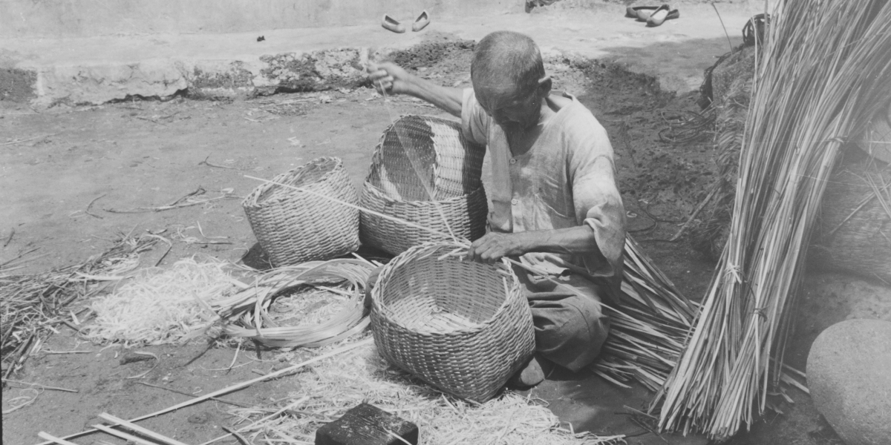
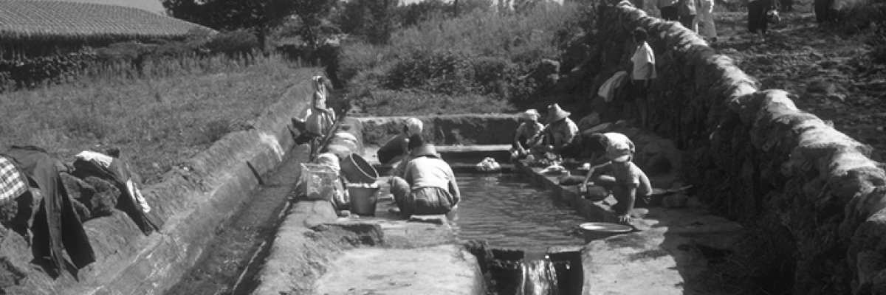

제주갈옷에는 대대로 이어온 제주인의 삶의 지혜가 담겨 있습니다.
제주갈옷에 담긴 전승 지식
-
01
‘갈옷’의 명칭은 지역과 구술자에 따라서 ‘감옷’이나 ‘감든옷’ 등으로 다양하게 불린다.
이번 현장 조사에서 확인한 결과, 이들 명칭 가운데 제보자들은 ‘갈옷’보다 ‘감옷’ 명칭을 더 많이 쓰고 있다. 또한 ‘갈옷/감옷/감든옷’의 옷의 명칭을 통해 ‘갈, 감’의 의미도 파악할 수 있었다. ‘갈’과 ‘감’은 옷의 재료인 열매의 의미가 아니라 염료인 ‘감물’의 의미로 쓰인 것으로 보인다. 이는 ‘감 들인다’, ‘갈 들인다’, ‘감 멕인다’는 표현 속에서 확인된다. 위의 사실로 볼 때 제주인은 ‘갈’이라는 말보다 ‘감’이라는 제주 토종의 원재료와 염색의 과정을 더욱 중시했음을 알 수 있다.
-
02
제주 갈옷의 종류에 대해 도내 각 지역에 따라서 다르게 불리고 있다.
남자들이 주로 입는 ‘갈중의’를 남원읍 지역에서는 ‘갈점벵이/갈정벵이’로 부르고, 이 지역의 ‘갈중의’는 ‘갈굴중의’ 의미로 사용하고 있어서 지역차를 확인할 수 있었다. ‘갈옷’ 종류를 마을별로 정리하면 다음 표와 같다.
-
연번 조사 지점 갈옷 명칭 갈옷 종류 기타 1 제주시 삼도2동 갈옷/감옷 (갈)몸뻬, (갈)쪼께 조께 2 제주시 삼도2동 갈옷/감옷 갈적삼, 갈 중의(남), 갈굴중의, 갈몸뻬, 갈조께 3 제주시 삼양2동 갈옷/감옷 갈적삼, 갈중의, 갈점벵이, (갈)굴중의, 갈몸뻬 등거리, 쪼끼 4 애월읍 광령2리 갈옷/감옷 갈적삼, 갈중의, 갈몸뻬 5 애월읍 금성리 갈옷/감옷/감든옷 감든적삼, 갈적삼, 감든중의, 감든굴중의, 갈중의, 갈몸뻬, 감든쪼께, 갈등거리, 베갈등거리 6 한림읍 명월리 갈옷/감옷 갈적삼, 갈중의, 갈몸뻬 등거리 7 한림읍 수원리 갈옷 갈중의, (갈)굴중의, (갈)몸뻬 등거리 8 한경면 용수리 감옷/감든옷 (갈)적삼, 갈중의, (갈)굴중의, (갈)몸뻬 등거리, 쮀께 9 한경면 낙천리 갈옷/감옷 갈적삼, 갈중의, (갈)굴중의, (갈)몸뻬 쪼끼, ᄌᆞ른중의 10 대정읍 일과1리 갈옷/감옷 갈적삼, (갈)굴중의, 갈치마, 감(갈)몸뻬, 갈치마,갈등지게, (감)쪼께 11 대정읍 신평리 갈옷/감옷 갈적삼, 갈중의, (갈)굴중의, 갈몸뻬 와이셔츠 12 안덕면 사계리 갈옷/감옷 (갈)적삼, 갈중의, 갈굴중의, 갈몸뻬, 갈조끼 13 안덕면 감산리 갈옷/감옷 갈적삼, 갈중의, 갈몸뻬 ᄄᆞᆷ바데 14 서귀포시 법환동 갈옷/감옷 갈적삼, 갈중의, 갈점벵이, 갈몸뻬 반바지 15 서귀포시 천지동 갈옷/감옷 갈적삼, 갈중의, 갈점벵이, (갈)굴중의 ᄄᆞᆷ바데 16 남원읍 신흥2리 갈옷/감옷 갈적삼, 갈중의(갈굴중의), 갈정벵이, 갈몸뻬 줴께 17 남원읍 태흥2리 갈옷/감옷 갈적삼, 갈중의, 갈점벵이, 갈몸뻬 18 표선면 가시리 갈옷 갈적삼, 갈중의, 갈정벵이, 갈쪼께 19 표선면 하천리 갈옷/감옷 갈적삼, (갈)굴중의, 갈몸뻬 20 성산읍 고성리 갈옷/감옷 갈적삼, 갈중의, 갈몸뻬 어깨말이 21 성산읍 오조리 갈옷/감옷 (갈)적삼, (갈)중의), (갈)몸뻬 22 성산읍 난산리 갈옷/감옷 갈적삼, 갈중의, 갈점벵이, 갈몸뻬 23 성산읍 신산리 갈옷/감옷 감적삼, 갈점벵이,(갈)굴중의, 감중의, 감몸뻬, 갈쓰봉, 감속곳, 감팬티 24 구좌읍 덕천리 갈옷/감옷 갈적삼, 갈중의, 갈몸뻬, 감몸뻬 조끼 25 구좌읍 월정리 갈옷/감옷 감적삼, 감중의, 감몸뻬, 감속곳 26 조천읍 와산리 갈옷 갈적삼, 갈둑지, 갈중의 27 조천읍 북촌리 갈옷/감옷 갈적삼, 갈독지, 갈중의, 갈굴중의, 갈몸뻬, 감몸뻬 - 
-
03
이번 현장조사에서 제주도민의 갈옷에 대한 생각, 선호하는 이유, 갈옷의 효용성 등 갈옷에 대한 인식에 대하여 살펴보았다.
특히 ‘갈옷’의 느낌과 촉감에 따른 어휘와 빛나는 구술 전통을 확인할 수 있었다. 예를 들어 ‘산도록허다’, ‘ᄉᆞᆯ그랑허다’, ‘사락사락하다’는 다양한 표현은 갈옷 문화가 만들어낸 또 다른 제주의 전승 지식이자 무형자산이다.
-
04
갈옷의 첫 착용 시기와 성별과 지역에 따른 갈옷 착용 상황과 차이점도 살펴보았다.
그 결과, 갈옷의 첫 착용 시점은 밭일 등을 할 수 있는 성년기나 결혼 이후가 대부분이었다. 갈옷은 중산간 마을이 해안 마을 사람들보다 더 많이 입었고, 남자보다 여자들이 갈옷을 더 많이 입고 있었다. 즉 마을마다의 환경에 따라 갈옷의 착용 방식이 차이점을 가지고 있으면서 해당 지역이나 마을의 전승 지식과 갈옷문화로 이어져 왔음을 알 수 있다.
-
05
갈옷을 관리하거나 세탁할 때의 유의점도 살펴보았다.
갈옷은 쉽게 변하는 성질이 있어서 젖었을 때는 빨리 말려 주어야 하고, 세제를 사용해서 빨거나 젖으면 검게 변색되는 경향이 있다. 따라서 제주인들은 세제가 아닌 물과 바람, 햇볕 등을 활용한 지속 가능한 갈옷 관리법에 대한 지식을 널리 공유하고 있었음을 확인하였다.
-
06
시대의 흐름과 유행에 따라 ‘갈옷’에 대한 인식도 많이 바뀌고 있음을 알 수 있다.
‘갈옷’도 시대 변천에 따라서 재질과 모양, 기법, 디자인 등을 달리하며 새롭게 혁신하고 있는 것이다. 표선면 가시리 안정생은 밭에 다닐 때 입는 옷과 외출할 때 입는 옷을 구분해서 입는다고 하였다. 옷은 때와 장소, 기능, 입는 사람의 기호에 따라 유행을 달리할 수밖에 없기 때문이다. 제보자들은 여전히 ‘갈옷’을 일복으로 선호하고 있지만 디자인과 모양 등을 현대화 하여 일상복이나 외출복 등으로 다채롭게 갈옷을 활용하고 있다. 특히 제주에서는 탐라문화제 등 민속예술제가 열리거나 제주를 표현해야 하는 무대에서는 갈옷을 무대복으로 입는 경우가 많다. 갈옷이 제주 사람, 제주 문화를 상징하는 아이콘으로 부상하고 있는 이유이다.
- 
이상과 같이 제주 갈옷 문화는 제주 여성들이 지속적으로 발전시켜온 제주의 전통문화이자 지속 가능한 미래 유산의 원동력이 되고 있다.
따라서 갈옷의 가치와 효용성을 다른 분야까지 확장하여, 제주의 감물 염색이 제주를 대표할 수 있는 미래 자원으로 다양하게 활용할 수 있도록 제주 사회가 지혜와 힘을 모아야 할 때다.